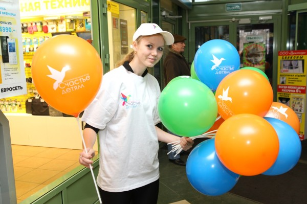

Когда человек понемногу становится взрослым, по мере его продвижения вверх по пирамиде Маслоу, если жизнь не опустила человека на дно, у него появляются желания оставить за собой нечто отличное от линейки айфонов. Самый простой способ удовлетворить это желание — благотворительность.
Много лет я вынашивал, как мне кажется до сих пор, крутую идею сделать из благотворительности товар. Но общество не готово. (У тебя наверняка тоже миллион таких «революционных» идей).
За несколько месяцев 2010 года клиенты кемеровского Сбербанка собрали для родителей Алины Конновой
Но мне повезло. Много лет по работе я общаюсь с заместителем руководителя Кемеровского Сбербанка Кириллом Классеным. У Кирилла Борисовича тоже желания, причём совпадающие с возможностями. Вместе с руководителем, Анжеликой Рузалимовной Рогожкиной, тему благотворительности они развивают давно, собирая посредством устанавливаемых в отделениях Сбербанка ящиков для пожертвования деньги на операции детям. Благотворительная акция тогда называлась «Поможем вместе». Я несколько раз ходил считать собранные деньги и писать новости.
Но, к сожалению для всех, данный метод, несмотря на то, что удалось помочь нескольким детям имел свои недостатки. Во-первых, не было отлаженной системы по выбору ребёнка, всё приходилось делать сотрудникам Сбербанка. Во-вторых количество кубов для пожертвований было ограничено сетью отделений Сбербанка в Кемерове. В-третьих, иногда люди жаловались в органы, мол непонятно куда деньжищи тратятся, такие люди, что тут говорить. Решено было становиться официальным фондом.
В процессе становления в фонде появились другие неравнодушные люди — Яна Кудашкина, заместитель директора компании Дюк и К, Валерий Костиков, директор ООО «Управляющая компания», управляющей «Променадами», директор кемеровского Ингосстраха Вадим Ситников, торговый дом «Колибри».
Своими ресурсами вызвалась помочь компания «СДС-Медиа» в лице директора Анастасии Танасюк. В написании текстов в СМИ и на сайт вызвалась помочь Наталья Надымова.
С сайтом, кстати, вышла занимательная ситуация. Сам я немного разрабатываю сайты, под вопросом всегда только дизайн. С просьбой помочь с дизайном я и обратился в профильной группе в Фэйсбуке к специалистам кемеровского рынка.
«Если ты веб-дизайнер, и готов сделать макет сайта, посвящённого благотворительности даром, откликнись. Будет, что в старости вспомнить.» Группа организаций вроде Сбербанка, Газпромнефти и ещё нескольких хотела бы объединить свои усилия в деле благотворительности, а именно сбора денег на операции детям (может быть ты видела ящики в отделениях Сбербанка) Планов много, задача сайта — систематизировать информацию о нуждающихся в операциях детях и информировать людей о деятельности партнёров. ТЗ как всегда нет, да собственно нет и заказа. Всё это держится пока на энтузиазме нескольких людей в данных организациях. Примерную структуру сайта можно представить, если посмотреть сайт вот этого фонда http://chudo.tomsk.ru/ Стиль этого сайта тоже приятен, но копировать его, конечно, не стоит… Времени не очень много для запуска, но достаточно для дальнейшей «шлифовки». Главное начать ) Буду рад ответить на возникшие вопросы, спасибо.
Недолгое общение (65 комментариев) и мне удалось выяснить следующее:
— Ну пусть эти офигенные энтузиасты по десятке скинутся, может какого-нибудь захудалого 3-в-одном чувака и найдут.
— Максим я не соглашусь, что сайт ничего не стоит. А работа, диза, верстка, программинг, наполнение, это стоит реальных денег и если делать с умом, по внутренней себестоимости меньше 70 000 не получиться, а это уже реальные деньги. Сделать сайт можно, но в чем профит, если не в деньгах?
— Крупнейшие деньговладельцы страны хотят объединить усилия для сбора денег (на благую цель, да) и поэтому им надо, чтобы кто-то подогнал им работы тысяч на 50—100 бесплатно.
— Еще непонятно, зачем здесь именитые бренды Сбербанка и Ко. Если это личная инициатива группы людей, то так и надо раскручивать, иначе слишком много негатива и недоверия будет к проекту.
В общем, вот так. К слову, с тех пор это единственный случай, когда люди отказали в помощи (работы наверное много).
Пока осуществлялась регистрация (сложная долгая процедура), учредители фонда при участии Полины Наплавковой из «СДС-Медиа» прорабатывали мероприятия и фирменный стиль. В качестве символа, из нескольких предложенных, остановились на яркой жизнерадостной птичке колибри. Зарегистрировал домен СчастьеДетям.рф (было морально очень тяжело зарегистрировать кириллический, но другого варианта не нашлось). На домене пока размещена по сути заглушка, собираем информацию.
В прошлую субботу, 26 октября, в «Променаде-1» состоялась презентация фонда. В просьбе провести мероприятие не отказал Шачнев Андрей, за что ему тоже большое спасибо. Фотографировал мероприятие Васильченко Андрей (спасибо и ему). Кроме коротких приветственных речей учредителей, был презентован сам куб, в который можно опускать деньги для помощи Ткаченко Максиму из Зеленогорска. У Максима редкое заболевание. Чтобы жить, ему необходимо ежемесячно 500 тысяч рублей (правда ведь это не сравнится с нашими с тобой проблемами?).

Уже на презентации познакомился с актрисой Кемеровского театра для детей и молодежи Ольгой Редько. У Ольги много предложений, говорит, что готова помогать, а значит будем встречаться и работать вместе.
В планах фонда: поиск партнёров для установки кубов для пожертвований, проведение публичных мероприятий, работа с родителями. Если ты можешь принять решение об установке такого куба, не стесняйся и пиши. Стоимость изготовления куба — 2100 рублей. Ещё в 2200 рублей обойдётся подставка (если нужна). Эти расходы партнёр должен будет нести самостоятельно (правда ведь это не сравнится с 500 тысячами, чтобы жить?).
Мы открыты для предложений, будем рады твоим вариантам сотрудничества.